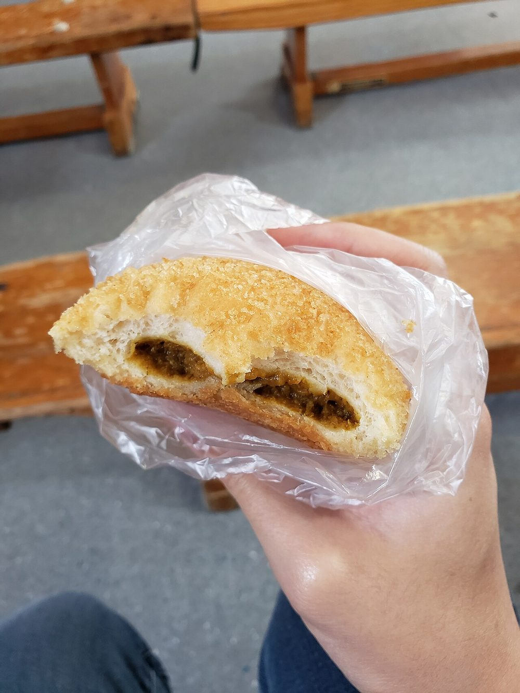

Chhena Tarkari
soft fresh cheese in a light gingered tomato gravy, no onion, no garlic, straight out of the temple kitchen

Contains: milk
Checked against the ingredient list for ten allergens: milk, egg, fish, crustaceans, tree nuts, peanuts, sesame, mustard, soy and gluten. Brands vary, so read the label on anything new to you.
Ingredients
Quantities for 4.
- 300g, cut into 2cm cubes Paneeror fresh chhena, drained and pressed only lightly so it stays soft
- 3 medium, pureed Tomato
- 1 tbsp, grated Gingerthe only aromatic in the dish, so use it generously
- 3, slit Green Chilli
- 1 tsp Cumin Seeds
- 1 Bay Leaf
- 1/2 tsp Turmeric
- 1 tsp Cumin Powder
- 1.5 tsp Coriander Powder
- 1/2 tsp Garam Masalaadded at the end
- 2 tbsp Ghee
- 100ml Milksoftens the gravy the way cream wouldoptional
- 1/2 tsp Sugaroptional
- to taste Salt
- 300ml Water
- 2 tbsp, chopped Coriander Leavesoptional
Cookware
stovetop, kadhai
Before you start
- If you are using shop paneer, soak the cubes in hot salted water for 10 minutes before you start. It brings back the softness that chhena has naturally.
- Puree the tomatoes smooth and keep them ready; with no onion in the pan, the tomato has to be fried properly to build the base.
- Grate the ginger rather than chopping it so it melts into the gravy.
Method
- Heat the ghee in a kadhai and add the bay leaf and cumin seeds. They should sizzle on contact and smell toasty in about 15 seconds.
- Add the grated ginger and slit green chillies and fry 1 minute, until the raw ginger smell lifts.
- Pour in the tomato puree with the turmeric, cumin powder and coriander powder. Stand back, it will spit.
- Fry the puree on medium heat for 8-10 minutes, stirring, until it darkens to brick red and the ghee separates at the edges.This is the whole dish. Undercooked tomato tastes raw and thin, and there is no onion here to hide behind.
- Add the water and salt, bring to a boil, then simmer 5 minutes.
- Slide in the paneer cubes, add the sugar, and simmer very gently for 6 minutes, spooning gravy over them.Never boil paneer hard. It tightens into rubber. A lazy bubble at the edge is all you want.
- Stir in the milk and the garam masala and warm through for 1 minute without boiling.
- Take off the heat, scatter the coriander leaves and rest 5 minutes before serving with rice or roti.
Storage
Keeps 2 days refrigerated. Reheat covered on a low flame with 3 tbsp water; the paneer firms up in the fridge and softens again as it warms.
Nutrition Good estimate
Medium protein: 16 g a serving, 19% of the calories
| Per serving219 g | Per 100 g | |
|---|---|---|
| Calories | 334 kcal | 153 kcal |
| Protein | 16.1 g | 7 g |
| Carbohydrate | 10.7 g | 5 g |
| of which sugars | 6.4 g | 3 g |
| Fibre | 2.2 g | 1 g |
| Fat | 26.0 g | 12 g |
| of which saturated | 14.2 g | 6 g |
| of which unsaturated | 8.3 g | 4 g |
Ingredients added to taste rather than by weight are counted as zero, so the true figure is a little higher than shown. Worked out from the listed quantities; most of the ingredient list could be weighed. Ingredients given to taste rather than by weight are counted as zero, so the real figure is a little higher than this. The + says so. Some ingredients have no exact match in the nutrient database and use the nearest equivalent: garam masala. Estimated from raw ingredients using USDA FoodData Central. Cooking changes are not modelled, and added salt is excluded, so sodium is not given.
Written and checked against sources, not cooked in a test kitchen. Times, yields, allergens and nutrition are worked out rather than measured, so use your own judgement on doneness and on storing. More in About.